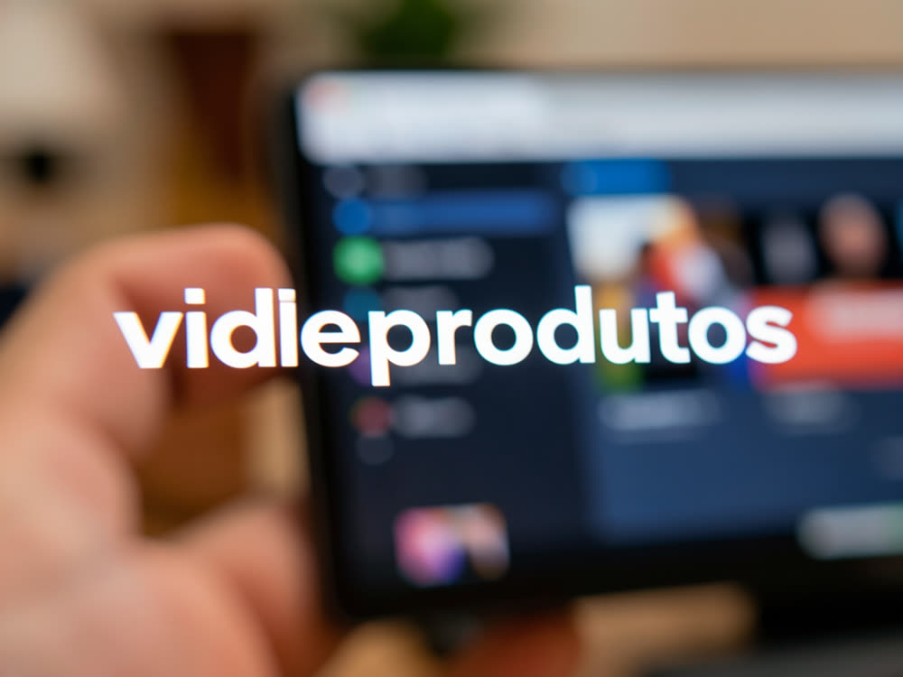
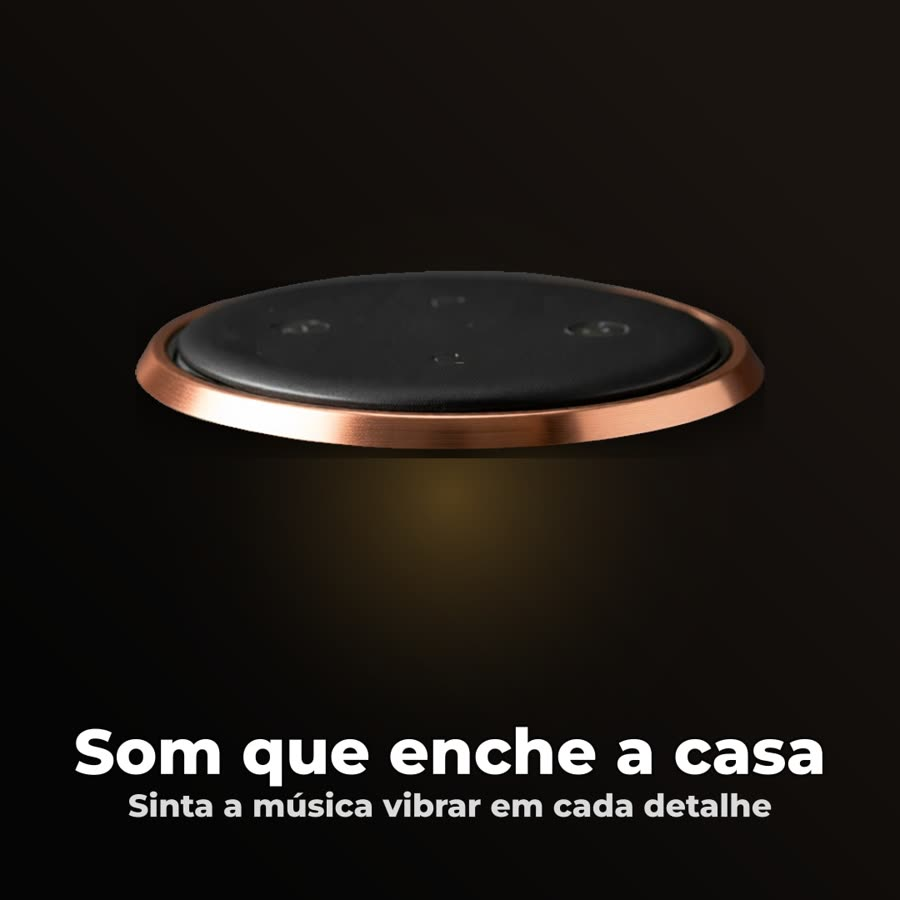
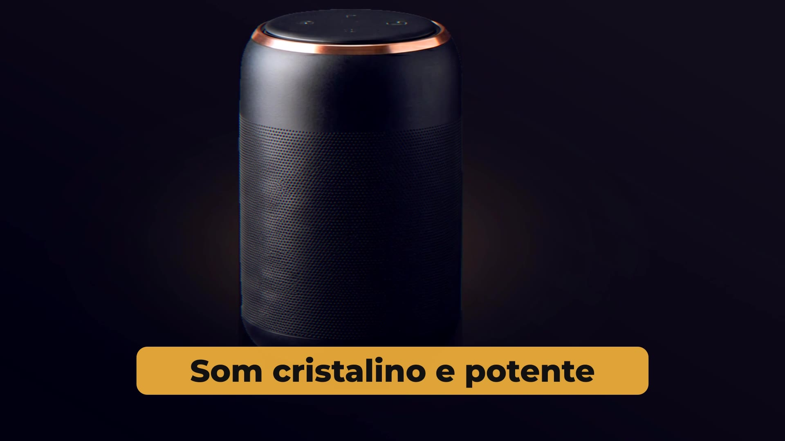
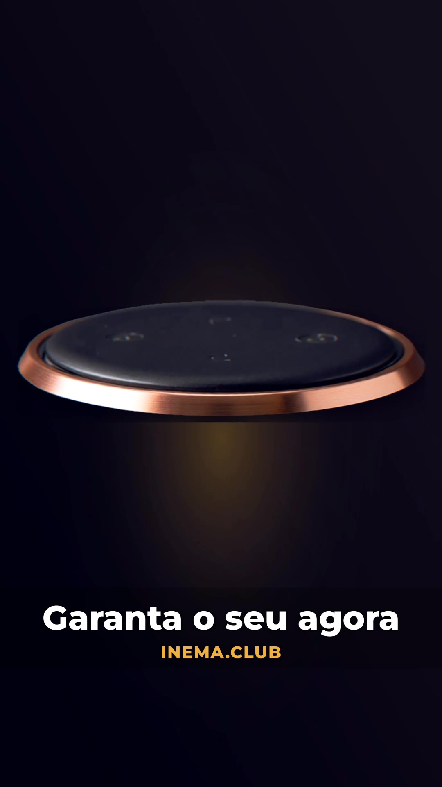
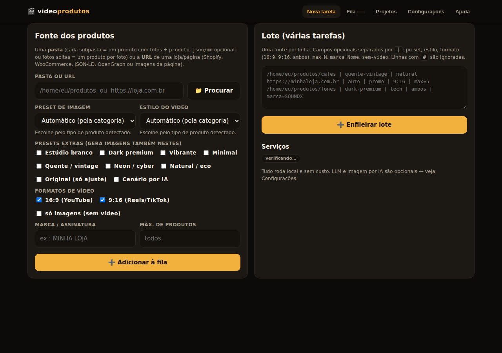

Aponte a pasta de fotos ou a URL da loja. O videoprodutos acha os produtos, recorta o fundo, aplica o preset de estilo (ou escolhe sozinho pelo tipo de produto) e renderiza o vídeo em 16:9 e 9:16 — numa fila, pela página web. Sem API paga, sem crédito.

Um servidor Node com página web e fila persistente. Cada tarefa (pasta ou link) vira um projeto salvo em disco com originais, imagens por preset em três proporções e vídeos prontos para YouTube e Reels.
Pasta (subpasta = produto, ou fotos soltas) ou URL: Shopify, WooCommerce, JSON-LD, OpenGraph e, por último, as imagens grandes da página. Traz nome, descrição e preço quando existem.
Estúdio branco, dark premium, vibrante, minimal, quente/vintage, neon, natural, original e cenário por IA. Recorte de fundo com rembg local; saída 1:1, 16:9 e 9:16, limpa e com título/preço.
Dinâmico, elegante, tech, natural, promoção e cinemático: zoom/pan, transições, grade de cor, música CC0 (Freesound via inemavox) ou trilha sintética, narração opcional e um catálogo com todos os produtos.
A categoria detectada (tecnologia, moda, alimento, casa, pet, joias…) decide o preset e o estilo quando você deixa em "automático". O copy (título, tagline, 3 benefícios, CTA) vem do Ollama local — ou de um template se não houver LLM.
| preset | quando usar |
|---|---|
| estudio-branco | e-commerce, cursos, livros |
| dark-premium | tecnologia, joias, automotivo |
| vibrante | esporte, infantil |
| minimal | moda, beleza |
| quente-vintage | alimentos e bebidas |
| neon | games |
| natural | casa, pet, eco |
| original | só corrige luz/cor e enquadra |
| cenario-ia | fundo fotográfico gerado (inemaimg / Agnes / API) |
| estilo | ritmo |
|---|---|
| dinamico | cortes de 2,2 s, punch zoom, slide |
| elegante | 3,6 s por cena, fades longos |
| tech | grade azul/ciano, wipe, leve rgbashift |
| natural | quente, suave, violão |
| promo | preço em destaque, CTA forte |
| cinematico | vinheta, contraste, trilha épica |
Obrigatório: Node 20+ e ffmpeg. Recomendado: Python com rembg (recorte de fundo). Opcionais e desligáveis: Ollama (copy), inemavox (música/narração) e inemaimg ou uma API compatível (cenário por IA).
Servidor, composição (sharp) e render (h264_nvenc quando há GPU NVIDIA, senão libx264).
# checar node -v # >= 20 ffmpeg -version | head -1
Remoção de fundo local com modelos ONNX. Sem ele o produto entra sem recorte.
python3 -m venv .venv
.venv/bin/pip install rembg onnxruntime pillow numpySe estiverem no ar, o app usa; se não, cai no fallback local sem quebrar.
curl localhost:11434/api/tags # Ollama → copy curl localhost:8010/api/system/status # inemavox → música/voz curl localhost:8000/health # inemaimg → cenário IA
Cinco passos. O terceiro é o único que você vai repetir.
Clona, instala as dependências Node e abre a página web na porta 3080.
git clone https://github.com/inematds/videoprodutos && cd videoprodutos npm install npm start # → http://localhost:3080
Subpasta por produto com as fotos e um produto.json ou produto.md opcional (nome, preço, descrição, categoria). Fotos soltas na raiz viram um produto cada. Ou simplesmente use a URL da loja.
produtos/ fone-x1/ ← um produto, várias fotos 1.jpg 2.jpg produto.json ← {"name":"Fone X1","price":"R$ 199","desc":"…","category":"tecnologia"} caneca-azul/ foto.png produto.md ← 1ª linha = nome, resto = descrição camiseta.jpg ← foto solta = um produto
Na aba Nova tarefa: cole a pasta (ou use "Procurar") ou a URL, escolha preset e estilo (ou deixe "Automático"), marque 16:9 e/ou 9:16 e clique em Adicionar à fila. A aba Fila mostra o progresso e o log ao vivo. Pela CLI é a mesma coisa:
node cli.js ~/produtos --preset dark-premium --estilo tech --marca "MINHA LOJA" node cli.js https://loja.com.br --max 5 --formato 9:16 node cli.js ~/produtos/cafes # tudo automático
Na aba Nova tarefa → Lote (ou --lote lista.txt): uma fonte por linha, campos opcionais separados por |. A fila processa em série e sobrevive a reinício do servidor.
# fonte | preset | estilo | formato | max=N | marca=Nome | sem-video ~/produtos/cafes | quente-vintage | natural https://minhaloja.com.br | auto | promo | 9:16 | max=5 ~/produtos/fones | dark-premium | tech | ambos | marca=SOUNDX ~/produtos/camisetas | minimal | | | sem-video # só imagens
Aba Projetos: player dos vídeos, todas as imagens por preset e os originais, com download. Em disco fica tudo em uma pasta autocontida:
~/projetos/output/videoprodutos/<id>/ projeto.json ← manifesto: produtos, copy, categoria, preset, estilo, arquivos originais/ ← fotos de entrada imagens/<preset>/ ← 1:1, 16:9, 9:16 · limpa e com texto videos/ ← <produto>-<estilo>-16x9.mp4, -9x16.mp4, _catalogo-*.mp4
Aba Configurações (grava no .env) ou edite o arquivo. Cada provedor pode ser none; o app continua funcionando com templates e presets locais.
LLM_PROVIDER=ollama # none | ollama | openai (qualquer API compatível: Groq, OpenRouter…) OLLAMA_MODEL=qwen3.8:27b IMG_PROVIDER=inemaimg # none | inemaimg (flux2-klein local) | agnes (US$ 0) | openai TTS_ENGINE=edge # none | edge | chatterbox (via inemavox) MUSIC=freesound # none | freesound | freesound-api | synth VIDEO_ENGINE=ffmpeg # ffmpeg (local) | agnes (clipes de câmera por IA, US$ 0) | kie (reservado) APP_PASSWORD= # senha HTTP Basic — obrigatória numa VPS
Perfil pronto em deploy/: Agnes para copy, cenário e vídeo, edge-tts para a voz, rembg em CPU, libx264 no render, senha na frente. Testado em 2 vCPU / 4 GB.
git clone https://github.com/inematds/videoprodutos /root/projetos/videoprodutos cd /root/projetos/videoprodutos && bash deploy/deploy.sh # deps, venv, fontes, systemd nano .env # AGNES_API_KEY e APP_PASSWORD (modelo em deploy/env.vps.example) systemctl restart videoprodutos # → http://IP:3080
Duas fotos de produto numa pasta, tudo em automático: o cachorro caiu em "pet" (preset natural, estilo natural) e a caixa de som em "tecnologia" (dark premium, estilo tech). Copy pelo Ollama local, recorte pelo rembg, narração Edge TTS.




O núcleo (descoberta → imagens → vídeo → fila) está pronto. O que falta é refinamento e integração.
lib/videoai.js), perfil de deploy sem GPU com senha, edge-tts e Freesound diretos.